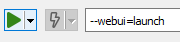

After testing the demo applications, it's time to get started yourself. For a better understanding it is recommended to have a look at the GAMS code of the sample applications for the next steps.
Note:
A GAMS model still can be used in the normal way (via GAMS Studio, GAMSIDE or the console) after the following adjustments
Visualization of parameters as tables
In the default configuration of a GAMS parameter, each index of a Parameter is shown in a separate column. The last column contains the parameter values. With this configuration, each set element of an index will be visible in a separate row. In the example below the Parameter price has two indices date and symbol. Each index is shown in a separate column named after the explanatory text of the corresponding set (or in case no explanatory text is available, the name of the symbol).
Sometimes it can be useful to show each set element of an index in a separate column of the table. For the parameter of the example above this would mean to have a column not for the set symbol itself but for all its elements AAPL, AXP, BA, etc.. To achieve this, a minor change in the declaration of the corresponding set has to be made.
One can either:
- Change the name of the set so that it ends with the header-keyword: hdr (to avoid renaming the set for the entire GAMS model, you can declare an alias for the set afterwards).
- Change the explanatory text of the set so that it ends with the keyword hdr. This is shown in the image below.
Note that a table width in this way quickly increases when the number of set elements of the last index gets higher. A number of for example 30 Stocks to be represented in a table would lead to 30 stock columns. In this case the default configuration for a table as shown first might be better.
If a Parameters with multiple value columns has to be displayed within the WebUI, a manual definition of the header is required. In the picture below this is done for the Parameter PData. By defining the Index phdr, the set elements Demand and Production Time are shown as value columns in the WebUI table.
Note:
Scalars and singleton sets are by default collected in a separate table in the interface.
If all input and output symbols for the WebUI have been flagged, in a last step a file webui.gms has to be included by a  at the very end of the GAMS model. With the help of this file all model specific configuration files are created automatically.
at the very end of the GAMS model. With the help of this file all model specific configuration files are created automatically.
Generating model-specific configuration files
In the next step the model-specific configuration files for the Web Interface are created.
- Run the model with the compile time parameter --webui=compile.
Warning:
If you use a GAMS $call inside a model you need to pay attention to the path of external files you might include in this call. This is due to the different working directories depending on whether a GAMS model is run from the WebUI or not. The GAMS WebUI is providing you the path to your model file via the GAMS option idir1. This means that in order to e.g. import an Excel file test.xlsx, the GDXXRW tool needs to be called like this: $call gdxxrw i=%gams.idir1%test.xlsx. Alternatively, you may use absolute paths.
- After the run, a new directory named conf was automatically created. This directory contains the file GMSIO_config.json. In this file you can find the configuration of the input and output symbols in JSON Synax, which were previously defined in the GAMS model with the $on/offExternalInput and -output tags.
The model folder also contains an Excel file with the same name as your model file. This Excel file contains all the relevant input data that was extracted from your model and can be used to populate your WebUI.
Note:
In case you don't find an Excel file with the data, please make sure the xlsxwriter Python module was successfully installed (c.f. here).
- The very basic configuration is now done. You can start the WebUI by running the model again, this time with --webui=launch.

The first time this is done, all R packages needed for the WebUI will be automatically installed. This may take a while. When the installation is complete, the WebUI opens with the default browser of the operating system.
With the basic configuration you can upload Excel files, modify them from within the interface and start or stop a GAMS job. You also have access to the log and lst files of GAMS. When the model run has finished successfully, the results can be examined. In the default configuration, tables and pivot tables are generated.
Custom configuration
If required, the web interface of the GAMS model can now be further customized. All the configuration files for your WebUI are JSON files located in the directory: <modeldirectory>/conf. The GAMS WebUI comes with various pre-implemented graphing options: at the moment these are pie charts, bar charts, line charts, scatter plots and histograms. However, an R API is provided so even highly customized graphics can be generated. All this configuration is handled via the file: config.json. To generate this file, we recommend using our Configuration Generator. However, you may also use the JSON schema file which is located in <GAMSroot>/GMSWebUI/conf/. All the configuration files are validated against a schema, so you may use these schemata to learn how your JSON files should be structured.
Advanced configuration
If you want to visualize your data in a way that is not yet pre-implemented, there is the possibility to implement it yourself via an R API the WebUI comes with. The R code for these custom graphics must be stored in the directory: <modeldirecory>/customRenderer/. To learn more about this, read the documentation on custom renderers.


 button in the upper right corner you can switch between tabular and graphical data visualization. All scalar results are summarized in the tab "Scalars".
The
button in the upper right corner you can switch between tabular and graphical data visualization. All scalar results are summarized in the tab "Scalars".
The  button enables the user to download the model input and output data.
button enables the user to download the model input and output data.

 /
/  for input data and
for input data and  /
/  for output data. These tags can be used multiple times within a model. Alternatively one can write
for output data. These tags can be used multiple times within a model. Alternatively one can write